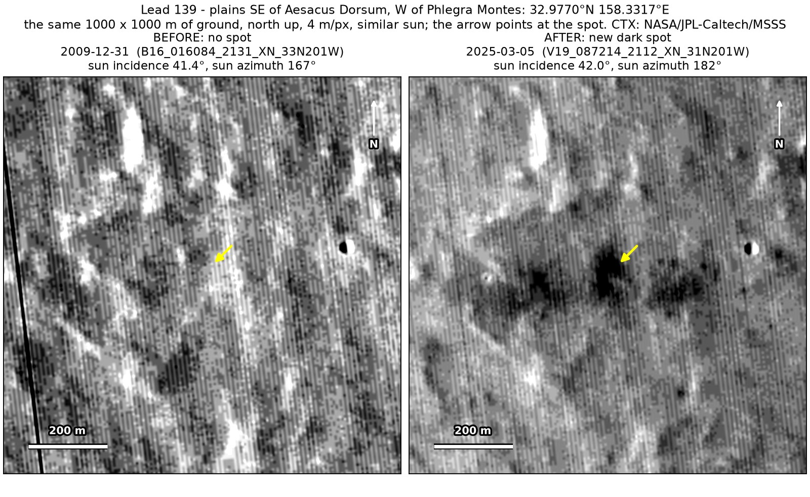
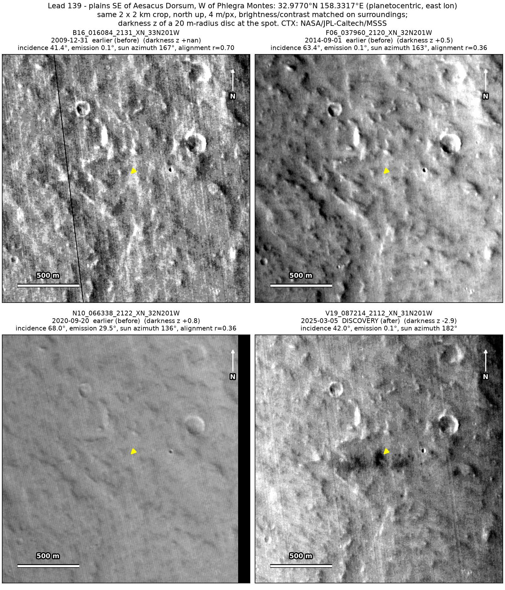
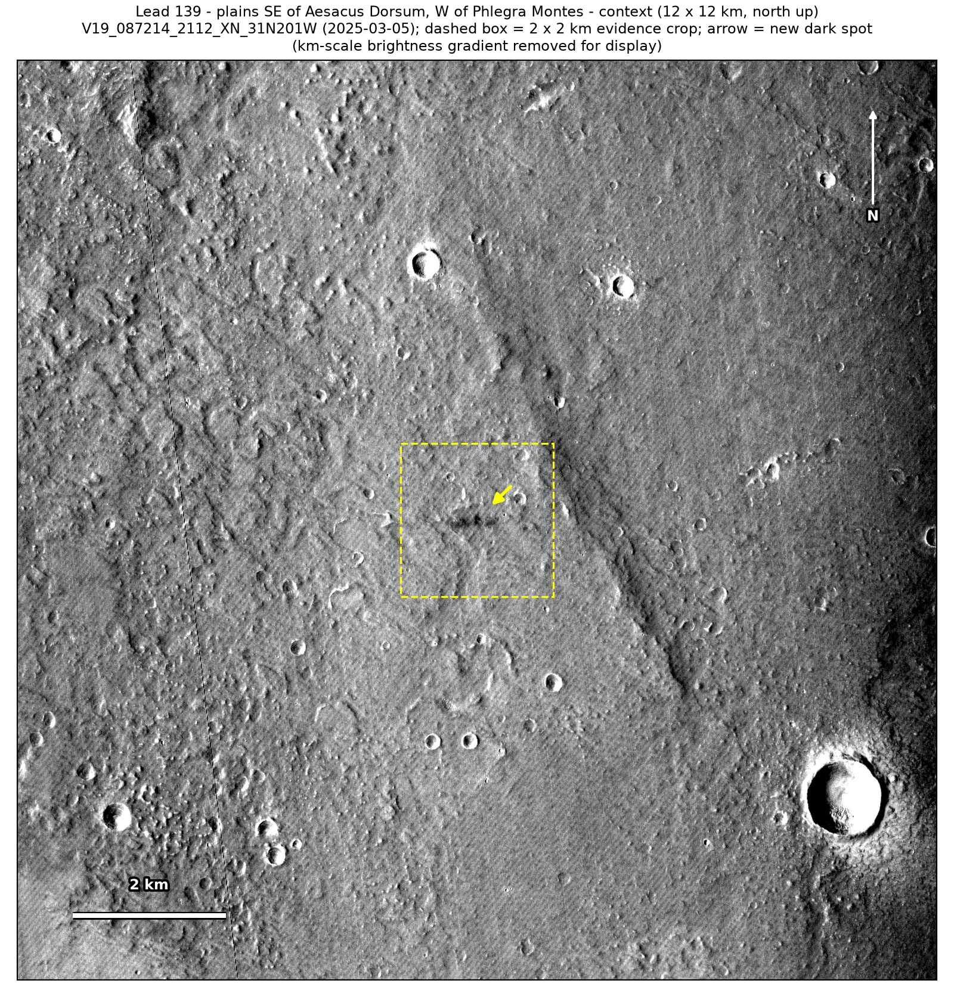

Professor of Mathematics
Paata Ivanisvili
Department of Mathematics, University of California, Irvine

← Possible new impact sites on Mars
Candidate 139: Plains south-east of Aesacus Dorsum, west of Phlegra Montes
Promising · roughly 50%

What changed. A chain of five dark patches about 610 m long from west to east, the largest with a darker core about 40 m across, appeared on plains west of Phlegra Montes between September 2020 and March 2025, in one CTX image so far.
Why it may be a new impact. Three earlier images from 2009 to 2020, one of them, of December 2009, under almost the same sun as the March 2025 image, show plain ground there, while a dark feature 236 m away shows in all three, and a short chain of dark patches with a darker core is the usual look of an impactor that broke up in the air.
- Location
- 32.977° N, 158.332° E
- Absent
- 31 December 2009, 1 September 2014 and 20 September 2020
- Present
- 5 March 2025
- Size
- Chain of five dark patches over about 610 m from west to east; the largest is 82 × 142 m in the March 2025 image, with a darker core about 40 m across
- Confidence
- Promising candidate; roughly 50% that it is a new impact.
- Caveat
- Only one image shows it, so it is rated promising rather than strong; an image defect cannot be ruled out with one image, and the largest patch is only 3% darker than its surroundings, near a regional dark band where the wind may also have stripped dust. The latest image without it, of September 2020, is hazy and taken under a low sun. It lies outside every footprint of the high-resolution HiRISE camera; the nearest ends 39.2 km away. Like every candidate here, it is unconfirmed: see the caveat.

